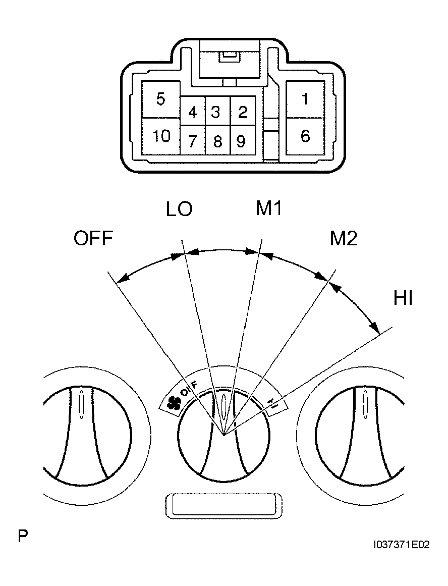

Center Cluster Module Switch: Inspection
- INSPECT CENTER CLUSTER MODULE SWITCH
- Inspect the blower switch resistance.
- Measure the resistance of the switch.
Standard resistance
TESTER CONNECTION AND SPECIFIED CONDITION CHARTTester Connection Switch Condition Specified Condition 1 - 2 - 6 - 7 - 10 OFF 10 kΩ or higher 1 - 2 LO Below 1 Ω 1 - 2 - 7 LO to M1 Below 1 Ω 1 - 2 - 7 M1 Below 1 Ω 1 - 2 - 7 - 6 M1 to M2 Below 1 Ω 1 - 2 - 6 M2 Below 1 Ω 1 - 2 - 6 - 10 M2 to HI Below 1 Ω 1 - 2 - 10 HI Below 1 Ω If the result is not as specified, replace the center cluster module switch.
- Measure the resistance of the switch.
- Inspect the illumination operation. Connect the positive (+) lead from the battery to terminal 4 and negative (-) lead to terminal 5, then check that the illuminations come on.

Courtesy of © TOYOTA, LICENSE AGREEMENT TMS1002If there is a bulb that does not come on, replace the bulb.
- Inspect the A/C switch resistance.
- Inspect the indicator operation.
- Connect the positive (+) lead from the battery to terminal 3 and the negative (-) lead to terminal 1.
- Push the A/C switch and then check that the indicator comes on.
If the result is not as specified, replace the A/C switch.
- Inspect the blower switch resistance.